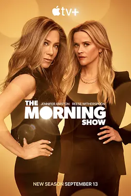

8.3
早间新闻 第三季
The Morning Show Season 3
2023
美国
评分 8.3
导演:
米密·莱德 / 托马斯·卡特 / 马克·T·盖茨三世 / 史黛西·帕松 / 詹妮弗·盖辛格
演员:
詹妮弗·安妮斯顿 / 瑞茜·威瑟斯彭 / 比利·克鲁德普 / 乔恩·哈姆 / 朱丽安娜·玛格丽丝
类型:
剧情,都市
剧情简介
清晨的新闻大厅依旧灯火通明，只是空气中多了一层难以言说的紧绷感。UBA 正处于关键时刻，新晋科技巨头保罗·马克斯的出现，让原本复杂的权力版图再次被打乱。他在每一次会议上的从容姿态，都暗示着他正在慢慢渗入这家媒体机构的核心，把科里、亚历克斯与布拉德利拉入一场牵扯更深的利益重构。亚历克斯在镜头前保持专业冷静，私下却不断衡量与保罗合作的风险。布拉德利则在新的新闻环境中愈发敏锐，她察觉到信息流动背后隐藏的力量争夺，常在深夜独自查阅资料、拨打电话，只为确认那些可能动摇频道未来的线索。科里在权力夹缝中奔走，每次穿梭在走廊的步伐都显得比过去更急促，像是在与看不见的崩塌赛跑。与此同时，新主播克里斯蒂娜带来鲜活的锋芒。她站在直播间中央，语速稳健，充满自信，让观众迅速记住了她的存在。可她的崛起也让内部竞争升温，编辑室的讨论变得更加尖锐，每个选题都像是一块被争夺的领地。董事会成员伦纳德·克伦威尔的冷静与坚硬，则让所有人意识到这季的危机不仅来自外界，也来自企业本身的裂缝。随着金融风暴与舆论变化交织，节目组在一次次突发状况中艰难维持正常播出。演播室的灯光依旧耀眼，但每位主播的表情背后，都藏着对未来走向的深刻不安。第三季以更大的格局展现媒体与资本的纠缠，让每个身处其中的人都不得不重新面对自己的信念与底线。